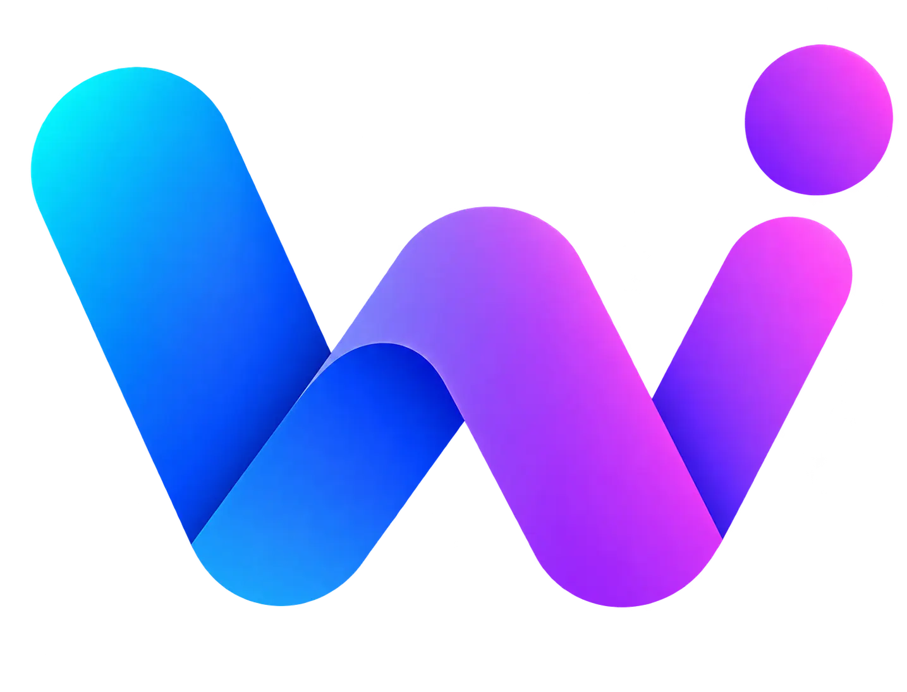

Подключите WikiVibe к уже установленным агентам Orca.
Версия плагина: 1.1.0 (не опубликована)
На Mac нажмите ⌘ J. Откроется окно Jump to… с поиском действий.
Или нажмите вверху левой панели кнопку Search worktrees and browser tabs.
Названия команд ниже — не кнопки. Введите в поиске WikiVibe, выберите команду и нажмите Enter.
Выберите WikiVibe: Открыть защищённую настройку и нажмите Enter.
Нет аккаунта? На открывшейся странице нажмите Открыть WikiVibe и зарегистрироваться, затем создайте API-ключ.
Введите ключ, выберите агентов, просмотрите изменения и подтвердите добавление провайдера с доступными ключу моделями.
Откройте новую сессию агента и выберите нужную модель средствами самого CLI. OpenCode, Pi и OMP имеют именованный провайдер WikiVibe; способы выбора в других агентах и ограничения показаны перед применением. Защищённая настройка не выбирает модель за вас.
WikiVibe — API-провайдер, а не отдельный агент. Плагин не добавляет фиктивного агента в список Orca.
Ключ хранится в защищённом хранилище Orca. В конфигурацию выбранного агента он попадёт только после явного согласия и будет записан открытым текстом.